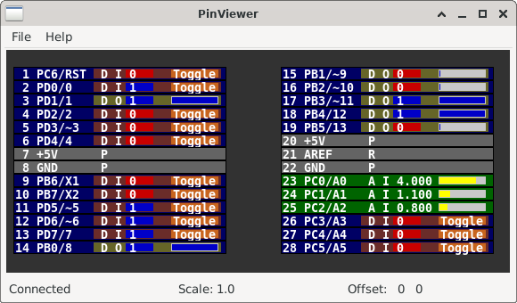

8.6 Pin Viewer
The PinViewer connects to PICSimLab through the rcontrol interface and allows viewing the status and direction of all microcontroller pins. It is also possible to change the state of the digital pins and adjust the voltage value on the analog pins configured as input. Pins configured as outputs also show the average value, useful for evaluating the functioning of PWM outputs.
